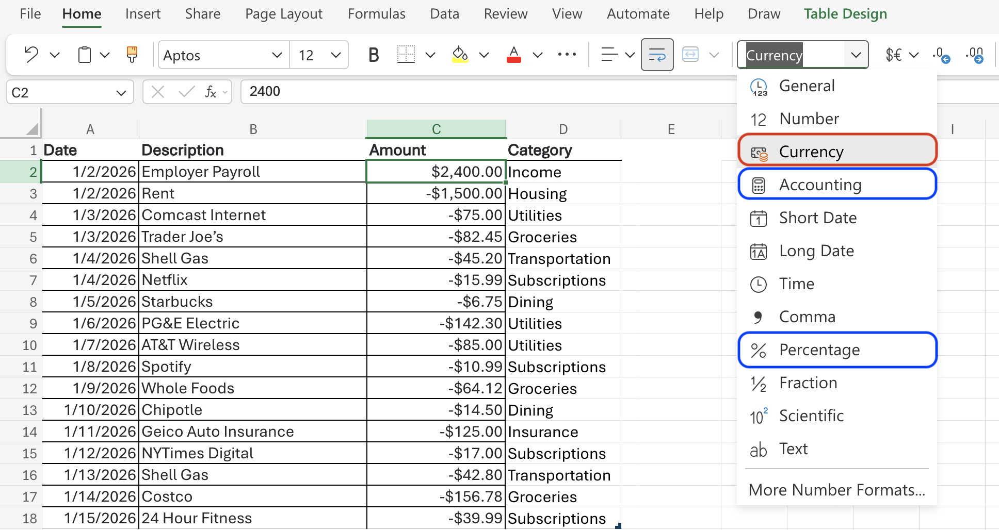
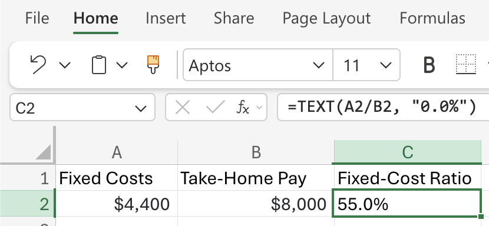
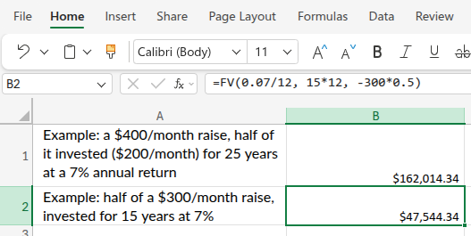

show/hide
fmt_dollar <- function(x, digits = 2) {
paste0("$", formatC(x, format = "f", digits = digits, big.mark = ","))
}The income chapter is mostly about behavior, but it also introduces some math and how to write R/Python functions.
Functions perform operations: calculate a total, build a table, create a graph, etc. The function’s arguments are the inputs it needs to do its job, and the output is what it gives back. For example, the sum() function takes a list of numbers as an argument and outputs their total.
In R, functions are defined using the function() keyword,
In Python, you use def:
Both languages allow you to create your own functions to perform specific tasks, which is especially useful for financial calculations.
Before working through any calculations, it helps to have a few small functions that handle the $ and % symbols you’ll see throughout this book. We’ll call these formatting utilities: they take a bare number and return a reader-friendly string.
fmt_dollar() adds a dollar sign, comma separators for thousands, and rounds to a given number of decimal places:
fmt_pct() expects a decimal rate (e.g., 0.07 for 7%) and converts it to a percentage string:
fmt_dollar() uses an f-string with , for thousands and .{digits}f for decimal places:
fmt_pct() also takes a decimal rate and multiplies by 100 before formatting:
In Excel, number formatting can be done with the tools in the toolbar. Just select the cells you’d to format and select the appropriate option from the dropdown.

Note there are two options for money (currency and accounting).1
Both fmt_dollar() and fmt_pct() follow the same convention: input is always a plain number, output is always a string. You’ll see them used to clean up results throughout this chapter.
Fixed costs are things like rent, loan payments, insurance, and utilities. They are considered fixed because they don’t really change month to month.
A good benchmark is to keep them under ~60% of your income/take-home pay (leaving about 40% for variable costs and savings).
Formula: Fixed-Cost Ratio = Fixed Costs ÷ Take-Home Pay × 100
Now we can apply the function to $4,200 of fixed costs on $9,200 take-home pay. The result is a decimal, so we pipe it into fmt_pct() to format it as a percentage string:
The pipe operator (|>) allows you to take the output of one function and use it as the input for another function, making your code more readable and efficient. Read more in the Pipe Operator section of R vs. Python.
In the example above, we pipe the raw ratio into fmt_pct() to produce the percentage string. A better way to do this is to wrap both steps in a single function:
In Python, we can define the same function without needing a pipe operator, since we can directly return the rounded and properly formatted string:
Apply our Python function to $4,200 of fixed costs on $9,200 take-home
Note the differences in using paste0() in R vs. f-strings in Python for formatting the output as a percentage string. Read more about string formatting in String Formatting.
In Excel there’s no function: we just put the numbers in cells and write the formula once. Enter the fixed costs in cell A2 and take-home pay in B2, then in C2:
That gives the ratio as decimal, but we can format C2 as a percentage using Home → %, or Ctrl+Shift+5.
To produce the percent string directly (the analog of R’s paste0(..., "%") and Python’s f-string), use TEXT() instead:
Below is the example from the text, showing the fixed-cost ratio as a percentage string:

In the Income chapter, we saw that “Split the raise” (i.e., put half of your monthly raise into the market for a few decades) is a powerful strategy for building wealth. But how powerful? Let’s put some numbers to it.
Formula: FV = PMT × [((1 + r)^n − 1) ÷ r]
This is the future-value-of-contributions formula we revisit in Investing Basics.
Let’s see what happens when we take half of a $300/month raise, invested for 15 years at 7%:
Half of a $300/month raise, invested for 15 years at 7%
Excel’s built-in FV() (future value) function’s arguments are FV(rate, nper, pmt):
rate is the return per period (monthly here): 7%/12nper is the number of periods: 15*12pmt is the amount invested each period, entered as a negative number because it’s cash leaving your pocket: -150 (half of $300) or -300*0.5Half of a $300/month raise, invested for 15 years at 7%

Read more about the differences between currency and accounting formats in Excel.↩︎